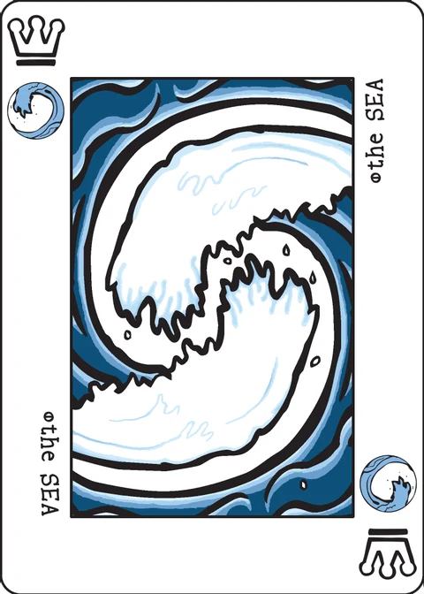

Oh Quay
a fast-playing game of raft building
Oh Quay can be played without any table space, with the players holding all of the cards in their hands. So it's a game you can play while standing in line, sitting in the back of a car, or with your feet dangling off a pier.
Rules for the game were introduced in The Decktet Book.
Setup
Shuffle the deck and separate it into four equal stacks of nine cards. Each player takes two of the stacks.
Without looking at the cards, turn one of the stacks widthwise and hold it so that it faces away from you. This stack is a dock, and it will serve as a draw pile during the game. Your opponent should be able to see the top card in the dock.
Take the other stack, turn it upright, and spread the cards out so that you can see them. This is your canal, and the cards represent barges of cargo. You are not allowed to change the order of the cards in your canal. During the game, you will have the chance to insert cards into the series and take cards off from the front but you may not re-arrange the cards.
It may take a little practice, but it is possible to hold the dock and the canal together in one hand. (The wiki page shows a photograph of the grip; that image is not bundled here — see the link below.)
Game play
Decide in some amicable way who will take the first turn. Players alternate turns, until one player has no cards left in their canal.
On your turn you Add Cargo (draw a card and put it in your canal) and then Launch a Raft (remove one or more cards from the front of your canal). You must do these in order.
Adding cargo:
Draw the front card from one of the docks. Your choice is between a card you can see (the one on the dock your opponent is holding) and a card you can't see (the one on the dock that you are holding).
Put the card somewhere in your canal. You may put it anywhere in the sequence: as the front card, the back card, or anywhere in between.
Although unlikely, it is possible that one of the two docks will run out cards. If this happens, then you must draw from the remaining dock.
Launching a raft:
Remove either a single card or a raft of cards from the front of your canal.
A raft is a group of cards that all share a single suit symbol and are arranged in rank order, with the lowest card in front. This represents a cluster of similar cargo that can be lashed together.
The cards in the raft must be in order, but they need not be consecutive. The front card must be the low ranked card.
When you remove cards from the front of your canal, show them to your opponent.
Then, if you took just one card, put it at the bottom of the dock that you are holding. (The bottom is the side closest to you.)
If you took a raft, you and your opponent each take a card from the raft and put it at the bottom of your respective docks. If the raft was three cards or longer, this will leave some cards left over. Put these left over cards in your score pile. You can keep your score pile behind your canal, with the cards facing away from you. If this is too much to hold, you can keep your score pile in your pocket.
If your canal is empty, then the game ends.
Scoring: Players score one point for each card in their score pile. The player with an empty canal scores one bonus point for each raft remaining in their opponent's canal (single card rafts also count).
If you are playing another game, the loser of this game takes the first turn in the next one. You can either play each game as a separate contest or add up scores over a series of games.
Strategy
Without making rafts, you will never be able to empty your canal. But two card rafts score no points. So you will often face the choice between completing a two card raft with a card from the dock you can see and taking the card you can't see in hopes of adding to a longer raft.
Each turn, the docks are replenished with single cards or parts of rafts. If the first nine cards in the dock have been drawn, then the rest are cards you've seen before.
Note on this implementation
The deck: this app plays the basic 36-card deck, split into the four stacks of nine as described.
What is hidden: the wiki's only hidden information lives in the docks, so the app treats the canals as public — you can look at your opponent's canal, as you could at a real table (the end-game count of "rafts remaining" assumes it). On your turn your own dock shows only a card back — that is the card you hold facing away — while the top of your opponent's dock is shown face up, exactly as the setup describes.
Which raft card goes where: the rules say you and your opponent "each take a card" from a launched raft without choosing which. The app gives the front card of the raft to the bottom of the launcher's own dock, the next card to the opponent's dock, and the rest (in order) to the launcher's score pile. Since both dock cards go to the bottom and are seen only after they reach the top, the choice cannot matter.
Rafts remaining at the end: counted greedily from the front of the canal — the longest same-suit ascending run, then the next from what is left, and so on; any leftover single counts as one raft.
Winning: the points above decide the game; an exact tie is a draw. The loser of a game takes the first turn of the next one in this app (after a draw, the other player starts).
Pass and play: after each launch the screen is covered with "Player N's turn" until the device is passed on, so each blind dock draw stays secret.
Credits
Original design: P.D. Magnus and Cristyn Magnus. Rules first published in The Decktet Book.
These rules are copied from the Oh Quay page of the Decktet wiki (page revision 8, last edited 07 Jan 2025) so they can be read offline, under the wiki's CC BY-NC-SA 3.0 licence. Cards by P.D. Magnus, same licence.
Further reading: Oh Quay at BGG · Spanish translation · Italian translation · Chinese translation